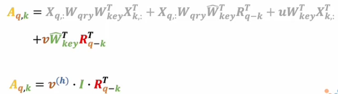
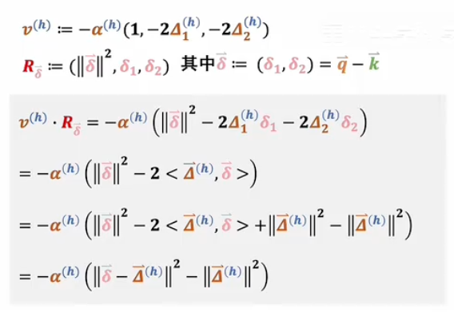

Attention（2）¶
多头注意力机制¶

多头注意力机制的理解：从 CNN 视角出发¶
一、为什么引入多头注意力？¶
- 单头注意力只能捕捉一种语义关系；
- 多头注意力通过并行计算多个不同语义空间中的注意力结果，提升模型表达能力；
- 最终将这些“多视角”的结果拼接后，再通过一个线性变换输出。
二、多头注意力的基本流程¶
- 输入数据（如词向量矩阵）；
- 使用不同的参数矩阵分别生成三组 Q、K、V；
- 并行计算三次注意力，得到三个不同语义空间下的输出；
- 将三组输出按维度拼接，形成更高维的表示；
- 再乘以一个统一的权重矩阵 W，输出最终结果。
三、为什么要分头计算？而不是直接用一个大矩阵？¶
- 如果直接使用一个大的注意力矩阵：
- 模型难以学习到多种语义特征；
- 缺乏对不同语义通道的独立建模；
- 分头计算相当于在不同子空间中提取信息；
- 类似于 CNN 中的多个卷积核，各自提取不同特征。
多头注意力机制流程¶
基本思想¶
将输入映射到多个不同的语义子空间中，分别进行注意力计算，再将结果融合输出，增强模型表达能力。
输入¶
- 一个词向量矩阵 $ X \in \mathbb{R}^{n \times d_{\text{model}}} $
- $ n $：序列长度（token 数量）
- $ d_{\text{model}} $：词向量维度
多头注意力机制计算流程¶
线性变换生成 Q、K、V（每个 head 独立）¶
对于每一个 attention head：
其中：
- $ W_Q^i, W_K^i, W_V^i \in \mathbb{R}^{d_{\text{model}} \times d_k} $ 是可学习参数；
- $ i = 1,2,...,h $，表示第 $ i $ 个 head；
- $ h $：head 的数量；
- $ d_k $：每个 head 的维度（通常 $ d_k = d_{\text{model}} / h $）
2. 每个 head 单独计算注意力¶
使用缩放点积注意力公式：
得到每个 head 的输出 $ \text{Head}_i $
3. 拼接所有 head 的输出¶
拼接后维度为：$ n \times d_{\text{model}} $
4. 最终线性变换¶
乘以权重矩阵 $ W_O \in \mathbb{R}^{d_{\text{model}} \times d_{\text{model}}} $：
输出¶
- 一个新的词向量矩阵，形状与输入相同：$ \mathbb{R}^{n \times d_{\text{model}}} $
- 包含了从多个语义子空间聚合而来的上下文信息
总结图示（文字版）¶
类比理解（图像 CNN）¶
| 注意力机制 | CNN |
|---|---|
| 每个 head | 一个卷积核 |
| 多头注意力 | 多通道特征提取 |
| Concat + Linear | 1×1 卷积整合通道信息 |
四、相对位置编码的作用（补充说明）¶
- 引入相对位置编码是为了让注意力机制更好地捕捉序列的局部依赖；
- 它使得模型能像 CNN 一样关注相邻元素的关系；
- 在一些论文中，作者通过实验设定（如输入全为0、W设为单位矩阵等），验证了这种 CNN 特征提取能力的存在；
- 相关设定如下：
- 所有输入设为 0；
- W 设为单位矩阵；
- R 向量所有 head 共享，V 各自不同；
这样可以简化问题，便于分析注意力机制是否具有类似 CNN 的局部归纳偏置。
多头注意力机制与CNN关系的数学解析¶


多头注意力与 CNN 的关系（论文核心思路）¶
为了体现多头注意力与卷积神经网络（CNN）的联系，作者设计了特殊的 R 向量 和 V 向量。
向量定义¶
V 向量（Value）¶
- 第一维：1
- 第二维：$ -2\delta $
- 整体乘上一个可学习参数 $ -\alpha $
形式为： $$ V = -\alpha \cdot [1, -2\delta] $$
R 向量（Relative Position）¶
- 第一项：$ \delta^2 $
- 第二项：$ \delta $
形式为： $$ R = [\delta^2, \delta] $$
其中 $ \delta = q - k $，表示 query 与 key 的相对位置。
注意力得分计算¶
通过内积得到注意力得分：
进一步变形为： $$ A = -\alpha (\delta - \Delta)^2 + C $$
这是一个关于 $ \delta $ 的二次函数，最大值出现在 $ \delta = \Delta $。
注意力分布特性¶
-
当 $ \delta = \Delta $，注意力得分最高；
\(\Delta\)是一个可学习的位置偏移参数，用于控制注意力机制中“最大关注点的位置”
-
随着距离增大，得分下降；
- 形成“窗口效应”：当前 token 更关注其附近 token；
- 类似于 一维卷积操作中的滑动窗口机制。
参数 α 的作用¶
- 控制影响范围的“宽度”；
- $ \alpha \to \infty $：只关注最中心的那个 token；
- $ \alpha $ 较小：周围 token 对当前 token 的影响更大；
- 相当于控制 CNN 中的感受野大小。

多头注意力机制如何扩展到二维？和 CNN 的类比¶
一、从一维到二维的扩展¶
- 在一维中，Q、K 是标量，\(\delta = q - k\) 是一个数；
- 在二维中，Q 和 K 变成向量（如位置坐标）；
- \(\delta = q - k\) 也变成一个向量，表示两个位置之间的相对偏移；
例如： - Q = (1, 4)，K = (3, 2) → \(\delta = (-2, 2)\)
二、V 和 R 向量的二维扩展¶
为了适应二维空间，对 V 和 R 进行如下设计：
V 向量（Value）：¶
R 向量（Relative Position）：¶
其中 \(\delta = (\delta_1, \delta_2)\) 是相对偏移向量。
三、注意力得分计算¶

通过内积得到注意力得分：
进一步变形为： $$ A = -\alpha |\delta - \Delta|^2 + C $$
这个函数在 \(\delta = \Delta\) 时取得最大值，模拟了类似卷积核的局部响应区域。
四、多头机制模拟卷积核¶
- 每个 head 学习不同的 \(\Delta\)，即关注不同方向或位置；
- 如设计 9 个 head，分别对应 3×3 卷积核中的每个位置；
- 最终拼接所有 head 的输出，形成“多通道”特征图；
- 再通过线性变换（W 矩阵），相当于进行 1×1 卷积整合通道信息；
这就构成了一个与 CNN 非常相似的结构。
五、与 CNN 的对比分析¶
| 特性 | CNN | Transformer（多头注意力） |
|---|---|---|
| 局部建模 | 固定感受野 | 动态学习关注区域 |
| 参数设定 | 固定卷积核 | 每个 head 自主学习 \(\Delta\) |
| 感受野控制 | 卷积核大小决定 | \(\alpha\) 控制影响范围 |
| 远距离依赖 | 无法直接建模 | 支持任意距离的注意力 |
六、Transformer 层数叠加的意义¶
- 类似于 CNN 中的层叠卷积层：
- 浅层：捕捉局部词义关系；
- 中间层：理解短语级语义；
- 深层：掌握段落、篇章级语义；
- 多层叠加使模型具备逐层抽象的能力。
七、总结类比¶
| 注意力机制 | 类比 CNN |
|---|---|
| 每个 attention head | 一个卷积核 |
| 多 head 输出拼接 | 多通道特征图 |
| 最终线性层 | 1×1 卷积整合 |
| 相对位置编码 | 模拟局部归纳偏置 |
| 多层叠加 | 提升语义抽象能力 |
结论¶
通过合理设计 V 和 R 向量，我们可以让多头注意力机制在二维空间中呈现出与 CNN 极其相似的建模能力。
但它更加灵活，不仅限于局部邻域，还能建模远距离依赖关系。
这种类比为我们理解视觉 Transformer（ViT）、图像处理任务等提供了非常直观的视角。
2. Multi-Head Attention 中每个 head 为什么要降维？¶
原因：¶
- 并行关注多种子空间信息：
-
每个 head 学习不同方面的特征，从而捕捉更丰富的语义信息。
-
减少计算量：
- 如果每个 head 使用原始维度 $ d_{\text{model}} $ 进行计算，复杂度会很高。
- 将输入向量维度 $ d_{\text{model}} $ 均分到 $ h $ 个 head 上，每个 head 的维度变为 $ d_{\text{model}} / h $，降低了单个 head 的计算复杂度，整体效率更高。
3. Transformer 的权重共享¶
目的：¶
- 减少参数量，提高模型效率。
实现方式：¶
- 在某些变体或特定实现中，允许 Encoder 或 Decoder 的不同层之间共享参数。
- 权重共享可行的原因：
- Transformer 的各层结构相同（自注意力 + 前馈网络）的堆叠设计；
- 实验表明，权重共享不会显著削弱模型性能，同时大幅减少参数量。
注意事项：¶
- Transformer 原始论文（Vaswani et al.）并未明确要求所有层都共享参数。
- 实际项目中可根据需求灵活选择是否进行权重共享。
1. 不同类型的多头注意力：MHA、MQA、GQA¶

Grouped-query¶
Multi-head Attention (MHA)：
- 每个 head 都有独立的 Query、Key 和 Value 矩阵。
- 标准的多头注意力机制，每个 head 的参数是独立的。
Multi-query Attention (MQA)：
- 所有的 head 共享同一个 Key 和 Value 矩阵。
- 每个 head 只保留独立的 Query 参数，大大减少了 Key 和 Value 矩阵的参数量。
Grouped-query Attention (GQA)：
- 将 Query 分为若干组（Group），每组共享一个 Key 和 Value 矩阵。
- GQA 是 MHA 和 MQA 的折中方案：
- GQA-1：只有一个组，等价于 MQA；
- GQA-H：每组与头数相等，等价于 MHA；
- GQA-N：介于 MHA 和 MQA 之间，分组一定数量的 Query 共享一组 Key 和 Value 矩阵。
MHA（Multi-Head Attention）¶
-
标准做法：假设有 $ h $ 个头，每个头都有单独的线性映射 $ W_i^Q, W_i^K, W_i^V $： $$ \text{head}_i = \text{Attention}(QW_i^Q, KW_i^K, VW_i^V) $$ 然后将这些头的输出拼接： $$ \text{MultiHead}(Q, K, V) = \text{Concat}(\text{head}_1, ..., \text{head}_h) W^O $$
-
含义：让模型可并行学习到不同子空间的注意力，“一个头”关注词性信息，“另一个头”关注句法结构信息，等等。
-
优点：表达力强，兼容自注意力和跨注意力等多场景；
-
缺点：参数量大，尤其在 Key / Value 维度上重复了多组。
MQA（Multi-Query Attention）¶
- 出处：Google 在 2019 年论文《Fast Transformer Decoding: One Write-Head is All You Need》。
- 核心思想：在多头解码场景下，所有头共享同一份 Key 和 Value，只有 Query 不同。
- 这样 Key、Value 的参数就只需要 1 组，大幅减少参数量、提高解码速度；
- 但也会带来一定性能损失，因为多头不再在 Key/Value 维度各自独立建模。
公式示意：¶
$$ \text{head}_i = \text{Attention}(QW_i^Q, K^, V^) $$ 其中 $ K^, V^ $ 是共享的 Key、Value。
GQA（Grouped-Query Attention）¶
- 出处：Google 2023 年论文《GQA: Training Generalized Multi-Query Transformer Models from Multi-Head Checkpoints》。
- 目的：折中 MHA 与 MQA 在性能与速度上的矛盾。
- 做法：将 $ h $ 个 Query 头分为 $ G $ 组 ($ 1 \leq G \leq h $)。每组使用独立的 $ K, V $；所以分组越少越接近 MQA，共享程度越高，速度快但表达力受限；分组越多越接近 MHA，速度较慢但表达力更强。
- 当 $ G = 1 $ 时：只有一个 Key/Value 表示，等同于 MQA；当 $ G = h $ 时，每个头都有独立 Key/Value，等同于 MHA。
区别¶
1. MHA（Multi-Head Attention）¶
特点：¶
- 每个头独立：每个注意力头都有独立的 $ Q, K, V $ 投影矩阵。
- 参数量大：每个头都有一组独立的 $ W_Q, W_K, W_V $ 矩阵，因此参数量较大。
- 灵活性强：每个头可以学习不同的特征，表达能力更强。
关键代码：¶
- 每个线性层的输出维度都是
hidden_size，表示每个头都有独立的 $ Q, K, V $ 向量。
分头操作：¶
- 将输入张量按
num_heads分成多个 head，每个 head 处理一部分维度。
2. MQA（Multi-Query Attention）¶
特点：¶
- 共享 Key 和 Value：所有头共享同一份 $ K $ 和 $ V $，只有 $ Q $ 是独立的。
- 参数量小：减少了 $ K $ 和 $ V $ 的参数量，提高了解码速度。
- 性能损失：由于共享 $ K $ 和 $ V $，多头无法在 $ K/V $ 维度上独立建模，可能影响性能。
关键代码：¶
- $ Q $ 的投影矩阵输出维度是
hidden_size，而 $ K $ 和 $ V $ 的投影矩阵输出维度是head_dim（即hidden_size // num_heads），因为它们是共享的。
分头操作：¶
- 对于 $ Q $，按
num_heads分头；对于 $ K $ 和 $ V $，只分成一组（head_num=1）。
3. GQA（Grouped-Query Attention）¶
特点：¶
- 折中设计：介于 MHA 和 MQA 之间，将 Query 头分为若干组，每组共享 $ K $ 和 $ V $。
- 灵活调整：通过调整组数 $ G $，可以在 MHA 和 MQA 之间平衡性能与效率：
- $ G = 1 $：等同于 MQA；
- $ G = h $：等同于 MHA；
- 中间值：兼顾速度和表达力。
关键代码：¶
- $ Q $ 的投影矩阵输出维度是
hidden_size，而 $ K $ 和 $ V $ 的投影矩阵输出维度是group_num * head_dim，表示每组共享一个 $ K $ 和 $ V $。
分头操作：¶
- 对于 $ Q $，按
num_heads分头；对于 $ K $ 和 $ V $，按group_num分组，并扩展到每个组。
总结对比¶
| 特性 | MHA | MQA | GQA |
|---|---|---|---|
| $ Q $ 的处理 | 每个头独立 | 每个头独立 | 每个头独立 |
| $ K $ 的处理 | 每个头独立 | 所有头共享 | 每组共享 |
| $ V $ 的处理 | 每个头独立 | 所有头共享 | 每组共享 |
| 参数量 | 最大 | 最小 | 可调 |
| 灵活性 | 最强 | 最弱 | 可调 |
| 适用场景 | 表达能力强，但参数量大 | 参数量小，适合解码加速 | 平衡性能与效率，适用于多种场景 |
核心区别：¶
-
MHA vs. MQA：
-
MHA：每个头完全独立，参数量大，表达能力强。
-
MQA：所有头共享 $ K $ 和 $ V $，参数量小，解码速度快，但性能可能下降。
-
MQA vs. GQA：
-
MQA：极端情况，所有头共享 $ K $ 和 $ V $。
-
GQA：折中方案，将头分为多组，每组共享 $ K $ 和 $ V $，灵活性更高。
-
MHA vs. GQA：
-
MHA：每个头独立，表达能力强。
- GQA：通过分组共享 $ K $ 和 $ V $，在 MHA 和 MQA 之间找到平衡。